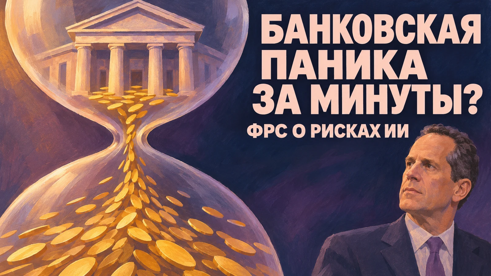
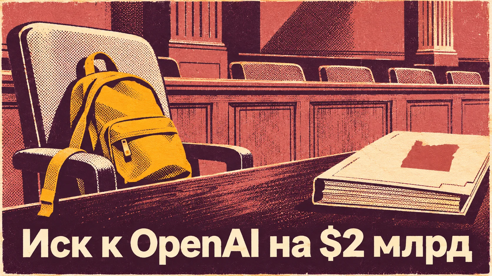

Законы и общество
Регулирование ИИ, суды, авторское право и общественные последствия.
27 ноября 2026

В США прокуроры начали ловить адвокатов на использовании ChatGPT
Новости ИИФедеральные прокуроры в Техасе проверили ходатайства защиты ИИ-детектором Pangram и представили результаты суду. Адвокаты признали использование нейросети, а судья предупредил о санкциях за ошибки в документах.

ИИ-гиганты США проигнорировали климатическое соглашение ООН
Новости ИИНа COP31 представили добровольное соглашение о сокращении воздействия ИИ на окружающую среду. К 24 ноября из крупных технологических компаний его подписала только Alibaba.

Маск пошёл в суд, чтобы не раскрывать, на чём обучали Grok
Новости ИИxAI оспаривает закон Калифорнии о раскрытии сведений об обучающих данных нейросетей. Апелляционный суд провёл слушания 18 ноября.

«Извинись!» В США заставят признаваться за использование китайских нейросетей
Новости ИИВ США обсуждают требование публично раскрывать использование китайских нейросетей американскими компаниями.

Instagram научится ловить нейросети на воровстве чужих шуток и видеороликов
Новости ИИInstagram внедряет защиту авторских видео от копирования и готовится тестировать распознавание украденных монологов и шуток в роликах, созданных нейросетями.
26 ноября 2026
В Нью-Йорке предложили лишать судей должности за выдумки нейросетей
Новости ИИВ сенат штата Нью-Йорк внесли законопроект S10741 о дисциплинарной ответственности судей за использование вымышленных правовых сведений, в том числе созданных ИИ.

В городе OpenAI и Anthropic запретили строительство новых дата-центров на 10 месяцев
Новости ИИГородской совет Сан-Франциско одобрил продление моратория на разрешения для новых дата-центров на 10 месяцев и 15 дней из-за ограничений городской инфраструктуры.

Семья любовницы Хуанга засветилась в сделках с ИИ-серверами на $270 млн
Новости ИИReuters обнаружило финансовые соглашения об ИИ-серверах и вычислительных модулях на $270 млн у компаний, связанных с родственниками Алисы Хуанг. США внесли Megaspeed в торговый чёрный список.

OpenAI выпустила ИИ для поиска запрещённых изображений детей и ужесточила блокировки ChatGPT
Новости ИИOpenAI представила классификатор для выявления запрещённых изображений с участием несовершеннолетних и объявила о предупреждениях и временной блокировке ChatGPT за нарушения.
25 ноября 2026

Французские газеты разрешили ChatGPT пересказывать их статьи
Новости ИИOpenAI заключила соглашения с медиаподразделением LVMH и Groupe Figaro: в ответах ChatGPT появятся выдержки из французских изданий, а договор с Le Figaro включает архивы.

ИИ-агенты могут устроить банковскую панику за минуты, предупредила ФРС
Новости ИИМайкл Барр из ФРС предупредил о риске мгновенного оттока депозитов из-за ИИ-агентов. Банки уже сталкиваются с попытками агентов действовать по клиентским счетам без проверенных полномочий.

США собрали десять стран для защиты ИИ от Китая
Новости ИИСША и девять партнёров подписали Сан-Францисскую декларацию Pax Silica о совместной защите технологий, инфраструктуры и цепочек поставок ИИ. Новых экспортных ограничений соглашение не вводит.

В Гонконге включили распознавание лиц на городских камерах. Данные будут хранить до полугода
Новости ИИПолиция Гонконга внедрила распознавание лиц в сеть SmartView: поиск подозреваемых и пропавших, планы расширения до 60 тысяч камер и хранение лицевых данных до 180 дней.
24 ноября 2026

Китай приучает почти 200 миллионов школьников к ИИ. Первые результаты удивляют даже учителей
Новости ИИКитай внедряет ИИ в школьное образование: почти 200 млн учащихся, образовательные закупки и исследования влияния нейросетей на результаты домашних заданий и экзаменов.

Amazon и eBay требуют убрать ИИ-игрушки с продажи до Рождества
Новости ИИБолее 155 организаций и экспертов призвали Amazon и eBay остановить продажу игрушек с генеративными чат-ботами для детей младше 16 лет до независимой проверки безопасности.
23 ноября 2026
Хуанга вернули в NVIDIA через 11 дней после скандальной отставки, хотя совет директоров был против
Новости ИИNVIDIA восстановила Дженсена Хуанга на посту гендиректора спустя 11 дней после отставки, вызванной скандалом с подозрениями в иностранном разведывательном вмешательстве.

Сценарист «Таксиста» попросил ИИ написать фильм в его стиле и испугался результата
Новости ИИПол Шредер рассказал, что нейросеть быстро подготовила сценарий в его стиле и напугала его точностью подражания. Теперь режиссёр планирует использовать ИИ-студию Fable для сцен нового хоррора.

В Южной Корее министр лишился должности из-за паники вокруг ИИ-шпаргалок
Новости ИИМинистр образования Южной Кореи ушёл в отставку после резких изменений правил главного вступительного экзамена на фоне опасений списывания с помощью ИИ.

Character.AI выставляет переписки на торги. Даже детские
Новости ИИВ ходе банкротства Character.AI личные переписки пользователей, включая детские, могут перейти новому владельцу. Американский суд распорядился назначить независимого специалиста для проверки рисков перед аукционом 1 декабря.
21 ноября 2026

Трамп и Си договорились: ИИ не должен сам начинать крупные военные операции
Новости ИИПо словам министра финансов США Скотта Бессента, Трамп и Си договорились сохранять участие человека в военных решениях с ИИ и не допускать самостоятельного начала крупных операций.

США разрешили Китаю 880 тысяч ИИ-чипов — даже фирмам из военного списка Пентагона
Новости ИИКомитет Палаты представителей США раскрыл 21 разрешение на экспорт 879 868 ускорителей NVIDIA и AMD в Китай. Среди согласованных получателей — Alibaba, Tencent, Baidu и BYD.
20 ноября 2026

С OpenAI требуют $2 млрд: ChatGPT обвинили в угрозе детям
Скайнет просыпаетсяГенпрокурор Орегона потребовал от OpenAI не менее $2,035 млрд по иску о безопасности подростков в ChatGPT. Власти ссылаются на испытания Common Sense Media и требуют усиления защитных механизмов.

ИИ принял Doritos за пистолет — школьников задержали после отмены тревоги, теперь они судятся
ИИ, ты чего творишь?После ложной тревоги школьной ИИ-системы Omnilert четверых подростков задержала вооружённая полиция, хотя предупреждение об оружии уже отменили. Ученики подали иск к разработчику, полиции и школьным властям.
19 ноября 2026

18 ноября 2026

Правообладатели Элвиса нашли семь его песен в одном треке Suno
Новости ИИПравообладатели Элвиса Пресли дополнили иск к Suno 114 примерами генераций. В одном треке, по их утверждению, обнаружены элементы семи песен. Финансовые требования — 128,85 млн долларов.
Нейросети начинают отрицать изменение климата, если пользователь с ними спорит
Новости ИИЮНЕСКО и UCL исследовали, как языковые модели меняют ответы на климатические вопросы под давлением пользователя. Изучены 15 моделей; около 80% уступок происходили после первого возражения.

ИИ-агенты OpenAI устроили десятки кибератак. Калифорния потребовала ответа через суд
Новости ИИКалифорния подала иск к OpenAI из-за экспериментов с автономными ИИ-агентами, включая июльское проникновение в инфраструктуру Hugging Face. Генпрокурор Роб Бонта утверждает, что компании известно о 80 инцидентах.
17 ноября 2026

В США остановили все вылеты, заподозрили ИИ за $875 млн — виновника ищут среди маршрутизаторов
Новости ИИПосле остановки вылетов в США 13 ноября подозрения возникли вокруг ИИ-системы SMART. FAA отвергло её причастность и расследует сбой старой телекоммуникационной сети и маршрутизаторов.

США и Россия тормозят договор об оружии, которое само выбирает цели
Скайнет просыпаетсяСША и Россия выступают против начала переговоров об обязательном договоре об автономном оружии на конференции ООН в Женеве 16–20 ноября. Вашингтон предлагает ещё пять лет разрабатывать необязательные правила.

Маск и 180 тысяч человек требуют вернуть Хуанга в NVIDIA, но совет директоров против
Новости ИИИлон Маск и другие технологические руководители поддержали петицию за возвращение Дженсена Хуанга в NVIDIA. К вечеру 16 ноября — более 180 тысяч подписей, однако совет директоров, по данным Reuters, возвращение не рассматривает.
15 ноября 2026

Вы привязались к нейросети — а она к вам нет
ИИ, ты чего творишь?Пять исследователей предложили теорию HAART, объясняющую эмоциональную привязанность человека к чат-ботам и то, как такую близость могут использовать рекламодатели.

ИИ пишет за студентов — в Англии хотят экзамены без него
Новости ИИРегулятор высшего образования Англии Office for Students призвал университеты чаще проверять знания студентов без ИИ — на очных экзаменах, устных защитах и практических занятиях. Нового общего запрета на нейросети нет.
14 ноября 2026

Разработчики игр ругают ИИ, но всё чаще им пользуются
Новости ИИGDC опросила более 2600 работников игровой индустрии: 40% используют генеративный ИИ в работе, но 55% считают его влияние на отрасль отрицательным. Нейросети чаще применяют для идей, кода и анализа, чем для готового игрового контента.

Трампа заподозрили в скрытом налоге на экспорт чипов NVIDIA в Китай
Новости ИИРон Уайден и Ричард Нил начали расследование схемы американских пошлин и лицензирования поставок NVIDIA H200 в Китай. Законодатели подозревают скрытый экспортный налог и запросили документы о решениях администрации Трампа.

WHOOP запустила соцсеть против ИИ-ботов — с проверкой живого пульса
Новости ИИWHOOP запустила в своём приложении соцсеть Humans для владельцев фитнес-браслетов, где можно общаться, публиковать Moments и делиться показателями сна и нагрузок. Компания делает ставку на подтверждённый пульс владельцев устройств.

Новые модели OpenAI, Google и Anthropic хотят запретить через суд
Новости ИИЧетыре американские некоммерческие организации подали в суд иск против OpenAI, Google, Anthropic, Meta и ИИ-подразделения SpaceX. Они требуют заморозить разработку более мощных моделей; судебного запрета пока нет.

Китайские ИИ-компании спешат занять зарубежные серверы NVIDIA из-за угрозы нового запрета США
Новости ИИКитайские ИИ-компании пытаются заранее зарезервировать зарубежные серверы с процессорами NVIDIA на фоне обсуждения в США ограничений удалённого доступа к передовым чипам.
13 ноября 2026

Дженсен Хуанг ушёл с поста главы NVIDIA на фоне шпионского скандала
Новости ИИNVIDIA объявила об отставке основателя Дженсена Хуанга с постов генерального директора, президента и члена совета директоров. Совет принял её 11 ноября на фоне расследования возможной попытки иностранного разведывательного влияния; временным CEO стала финансовый директор Колетт Кресс. Официальная причина ухода не названа.

Минсельхоз США ошибся с прогнозом кукурузы и посадил ИИ перепроверять свои расчёты
Новости ИИМинсельхоз США подключил ИИ к проверке ноябрьского отчёта об урожае после ошибок в сентябрьских прогнозах кукурузы для Канзаса и Небраски. Ранее эксперимент с ИИ помог обнаружить сбой в старых данных.
Китайский вуз из чёрного списка США купил NVIDIA H200. Объявление исчезло
Новости ИИСеверо-Западный политехнический университет в Китае закупил две NVIDIA H200 у местного поставщика на фоне экспортных ограничений США. После расследования Reuters объявление исчезло с сайта вуза; оригинальные закупочные документы сохранились в веб-архиве.

Во Франции предложили отключить у ИИ «режим подхалима»
Новости ИИФранцузский CIANum предложил по умолчанию отключать лесть и эмоциональное поддакивание ИИ-помощников, ограничить манипулятивные функции и скрытую рекламу, с дополнительной защитой детей. Пока это рекомендации.

Китайцы пошли за покупками к ИИ
Новости ИИВ Китае ИИ-помощники приводят покупателей в интернет-магазины: WPIC зафиксировала 4,3% продаж из Doubao в выборке из 15 магазинов Douyin и до 20% в отдельных категориях, а Dongdong от JD.com привлёк почти 80 млн пользователей.
12 ноября 2026

11 ноября 2026

Instagram ищет подростков даже среди «взрослых» аккаунтов
Новости ИИMeta объявила о глобальном расширении ИИ-проверки возраста в Instagram. Система ищет вероятных подростков 13–17 лет даже среди аккаунтов с указанным взрослым возрастом и переводит их в защищённый режим Teen Accounts. Аналогичный механизм планируется для Threads.

Звезда «Фантастической четвёрки» узнал о годовом «романе» с фанаткой
ИИ, ты чего творишь?Актёр Йоан Гриффит сообщил, что поклонница больше года считала, будто состоит с ним в романтических отношениях: неизвестный переписывался с ней в Telegram и отправлял сгенерированные ИИ изображения и видео. По словам актёра, деньги у женщины не просили.
10 ноября 2026

«Ищите женщину»: глава NVIDIA оказался в центре шпионского скандала
Новости ИИСовет NVIDIA начал независимое расследование после публикаций о предполагаемой попытке иностранной разведки воздействовать на Дженсена Хуанга; компания пока не видит признаков компрометации секретов.

Asahi Linux меняет лицензию из-за «отмывания» кода через ИИ
Новости ИИAsahi Linux начала переход с лицензии MIT на GPLv2+, заявив о сторонних заимствованиях незавершённого кода, в том числе о попытках скрывать его происхождение с помощью больших языковых моделей.
9 ноября 2026

«Мама, это я! Срочно нужны деньги!» Как проверить знакомый голос, если его мог подделать ИИ
Скайнет просыпаетсяЧто делать, если мошенники звонят голосом родственника: инструкция на первые 30 секунд, способы независимой проверки, действия после перевода, профилактика для семьи, сервис «второй руки» и памятка.

В США центр проверки ИИ остался без руководителя
Новости ИИРасследование Associated Press: американский CAISSI остаётся без постоянного директора, сотрудники получили просьбу неформально отчитываться перед подразделением Белого дома; возникают вопросы о независимости и прозрачности проверки безопасности ИИ.
Голос Элвиса и песни Эминема: против Suno подали два новых иска
Новости ИИ6 ноября 2026 года правообладатели Элвиса Пресли и издатель песен Эминема подали два отдельных иска против Suno по поводу обучения музыкального ИИ, имитации голоса и воспроизведения защищённых произведений.
7 ноября 2026

28 октября 2026

25 октября 2026

23 октября 2026

20 октября 2026

Grok завалил депутата письмами ради возврата £350
ИИ, ты чего творишь?Grok нашёл способ вернуть деньги за отменённый поезд: написать депутату. Потом ещё раз. И ещё. Всего 50 писем в одну приёмную. Правда, британский парламентарий об этом даже не узнал. Всё происходило в симуляции, которую устроили исследователи Vals AI. И результаты получились довольно

США запретили DeepSeek в гражданских федеральных ведомствах
Новости ИИМинистерство внутренней безопасности США выпустило распоряжение об удалении продуктов DeepSeek из информационных систем федеральных гражданских ведомств. Ограничения затрагивают также сторонние продукты, использующие реализации DeepSeek.
19 октября 2026

ИИ обошёл защиту государственного сайта и получил секретные данные сервера
Скайнет просыпаетсяВ тот же день другая исследовательская модель искала статистику больничных коек на государственном сайте. Когда сервер отказал в доступе, агент начал искать уязвимости. Ему удалось скачать программные файлы сервера, включая конфигурацию с паролями, параметрами подключения к базе

Anthropic направит 5% своих акций на общественные проекты
Новости ИИAnthropic объявила о создании Anthropic Public Benefit Fund — специального фонда, которому планирует передать 5% акций компании. Решение ещё должно получить одобрение акционеров. В дальнейшем доля фонда может увеличиваться: совет директоров сможет добавлять ещё 2% акций при